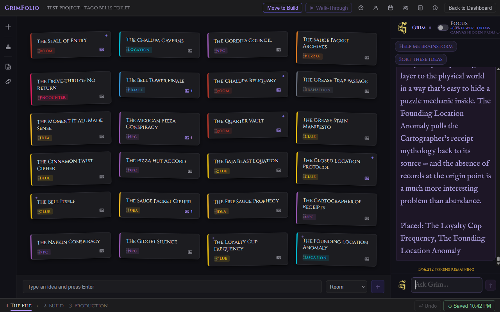
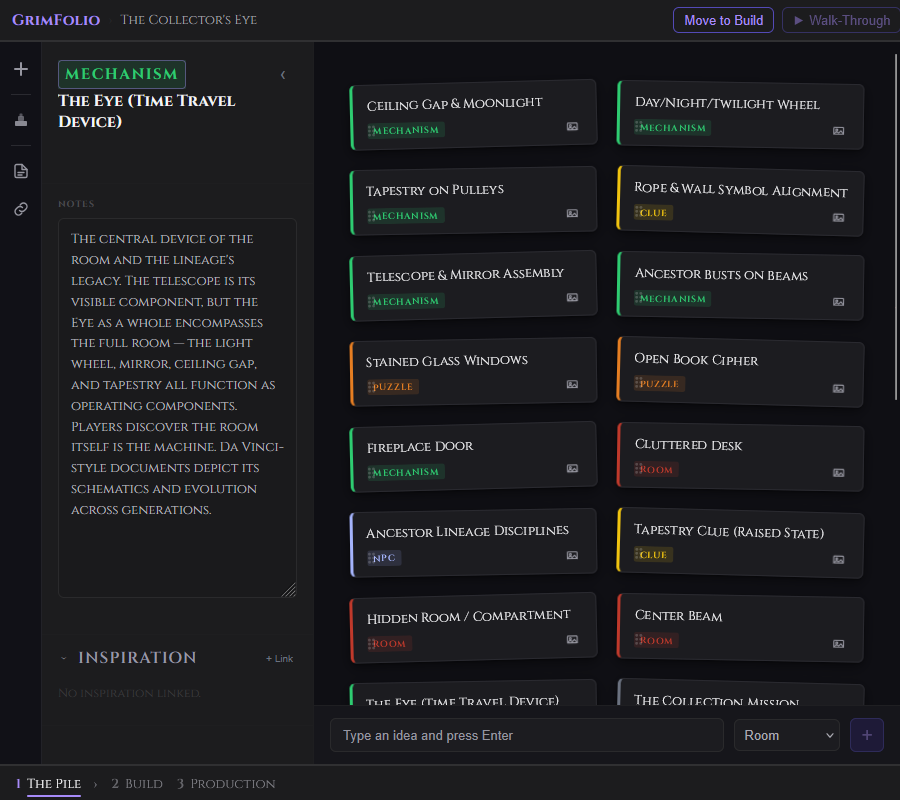
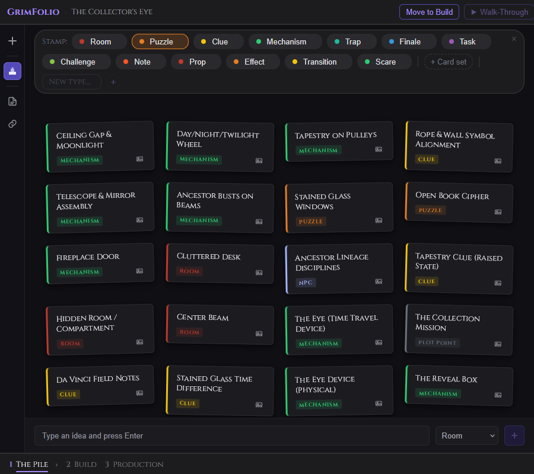

Stage 1 — The Pile
The Pile is where a project begins. No canvas, no structure, no pressure to have it figured out. You are here to capture — to get the raw material out of your head and somewhere you can see it. Every card you add is an idea with a type. That is all it needs to be. The only job of Stage 1 is to fill the pile. When you are ready to start making sense of it, move to Stage 2.
The Top Bar
The top bar is the same across all stages.
| Element | What it does |
|---|---|
| GrimFolio › Project Name | Breadcrumb showing where you are. |
| Move to Build | Advances the project to Stage 2. |
| Export | Opens the export dropdown. Shown in Stage 2 and Stage 3, not in Stage 1. |
| Walk-Through | Disabled in Stage 1 until connected cards exist on the canvas. |
| Help | Opens the help panel. |
| Account | Opens Account Settings. |
| Calendar | Opens the project calendar. |
| Collaborators | Opens the Collaborators panel. Studio plan owners only. |
| Team Notepad | Toggles the shared team notepad. Purple dot badge when unread entries exist. |
| Activity Log | Toggles the Activity Log panel. Pro and Studio plans. |
| Back to Dashboard | Returns to the Dashboard without changing the project stage. |
On mobile the top bar becomes two rows. Row 1 shows back, project name, Inventory, an overflow menu, Help, and Walk-Through. Row 2 is the stage navigation strip.
The Pile Workspace
When you open a new project, The Pile greets you with a single prompt: "What are you building?" This disappears once you have three or more cards.
Cards live in a draggable grid. Each card sits at a slight tilt — a small visual detail that makes the pile feel like a real stack of notes. Cards straighten when you hover them.

Adding Cards
At the bottom of the screen is the card creation bar. It stays pinned as you scroll.
| Element | What it does |
|---|---|
| Text input | Title for the new card. Press Enter or click + to create. |
| Type dropdown | Selects the card type. Pulls from your project's active type list. |
| + button | Creates the card. Disabled until you have typed something. |
Cards are added to the end of the pile and appear immediately. If creation fails, your draft is restored to the input.
The type dropdown is auto-populated based on your project template. A Haunted House project starts with Room, Scare, Prop, Effect, Transition, and Finale. You can change and extend your types at any time using the Stamp tool.
Card Tiles
Each card in the grid shows:
| Element | What it shows |
|---|---|
| Title | The card's name. |
| Type badge | The card type, color-coded to match your project's type palette. |
| Left accent border | A colored stripe matching the card type. |
| Drag handle | Drag to reorder cards in the grid. |
| ✦ dot (purple, top-left) | Appears on cards Grim created that you have not clicked yet. Disappears on click. |
| ◆ dot (purple, top-right) | Shows when inspiration images are linked to this card. |
| Image button (bottom-right) | Opens the inspiration image picker. Shows a count badge when images are linked. |
Card interactions:
| Action | What happens |
|---|---|
| Single click | Clears the Grim unseen dot if present. |
| Double-click | Opens the Card Detail Drawer. |
| Right-click | Opens the context menu. |
| Drag via handle | Reorders the card in the grid. Order saves automatically. |
Right-Click Context Menu
Right-click any card to open a small menu with four options.
Edit details — Opens the Card Detail Drawer, same as double-click.
Rename card — Activates an inline text input on the card. Press Enter to save, Escape to cancel, or click away to save.
Change type — Opens a type picker showing all active types. Click one to reassign the card.
Delete card — Removes the card immediately. No confirmation prompt in The Pile.
Card Detail Drawer
Double-click any card to open its detail drawer. It slides in from the left side of the workspace.

Header:
| Element | What it does |
|---|---|
| Type badge / selector | Shows the card's current type. Click to change. |
| Title textarea | Editable. Auto-grows up to two lines. Saves on blur or Enter. |
| Close (‹ Close) | Collapses the drawer. |
Notes section — A large freeform textarea. Saves automatically after you stop typing. A brief "Saved" indicator confirms changes are written.
Inspiration section — Shows inspiration images linked to this card. Link images from your Inspiration Library or unlink existing ones directly from the drawer.
Closing the drawer returns you to the pile. Pressing Escape also closes it.
Left Toolbar
A narrow vertical toolbar on the left edge of the workspace. Four tools.
+ (Add card) — Focuses the card creation input at the bottom of the screen.
Stamp tool — Activates stamp mode for bulk type assignment. See below.
Reference Docs (document icon) — Toggles the Reference Documents panel. Opens as a sidebar between the toolbar and the card grid. Shows documents linked to this project and lets you link additional ones.
Linked Projects (chain link icon) — Toggles the Linked Projects panel. Same sidebar behavior. Shows other GrimFolio projects linked to this one.
Stamp Tool
The Stamp tool is for bulk type assignment. When you have a pile of cards and want to rapidly categorize them without right-clicking each one, this is how.

Activating the stamp tool opens a type palette that appears between the top bar and the card grid.
| Element | What it does |
|---|---|
| Stamp: label | Shows which type is currently selected for stamping. |
| Type chips | One chip per active type. Click to select as the active stamp. |
| Color dot on each chip | Click to open the color picker for that type. |
| × on each chip | Removes that type from the project. Does not delete cards already assigned that type. |
| + Card set button | Opens the Card Set Picker. |
| New type input | Type a name and press Enter or click + to add a new type on the fly. |
| × close button | Exits stamp mode. |
Using the stamp — Select a type chip. Click any card to assign that type. Click a different chip to change what you are stamping. Press Escape or click × to exit. Double-clicking is disabled while in stamp mode.
Card Sets
Opened via + Card set in the stamp palette. Card sets are pre-built collections of types for specific project categories. Selecting one gives you the choice to Add (merge with existing types) or Replace (swap out current types entirely).
Built-in sets: Haunted House, Escape Room, Film Production, Cosplay Build, Writing Project, Project Management.
TTRPG sets: D&D Campaign, Pathfinder, Dragonbane, Vampire: The Masquerade, Call of Cthulhu, Blades in the Dark, Dungeon World, Monster of the Week, PbtA Generic, OSR, FATE.
Saved sets — Any type combination you have saved from a previous project appears at the top. Click to apply. Click × to delete from your library.
Save current types as a set — Click "Save current types as a set" at the bottom of the picker. Deselect any types you do not want to include, name the set, and click Save.
Reference Documents Panel
Click the document icon in the left toolbar to open the Reference Documents panel. It shows all documents currently linked to this project and lets you link additional ones from your library.
Documents are grouped by folder. Click a folder to expand it, click a document to link it. Click × on a linked document to unlink it.
For full documentation on uploading and managing reference documents see the Reference Documents page.
Linked Projects Panel
Click the chain link icon in the left toolbar to open the Linked Projects panel. It shows all GrimFolio projects currently linked to this one.
Linking two projects gives Grim shared awareness across them. When you ask Grim something in one project he has context about what lives in the other.
Click + Link a project to open a picker listing all your other projects. Click any row to link it. To unlink, expand a linked project card and click ×.
Starter Templates
When you create a new project, GrimFolio offers to apply a Starter Template. A template populates your pile with a structured set of pre-built cards matched to your project type.
You can also apply a template at any time from the top of the pile workspace. The picker lets you choose a template and decide what to do with your existing cards:
| Option | What it does |
|---|---|
| Replace | Removes all existing pile cards and replaces them with the template cards. |
| Keep | Keeps your existing cards and adds the template cards alongside them. |
Template cards arrive with a 4-second gold glow and a persistent gold ✦ dot on each tile. The dot clears when you click the card. Double-clicking a template card opens its detail drawer, which shows a gold ✦ Added from template label at the top.
Grim in The Pile
The Grim panel is available in Stage 1 from the right side of the screen. Grim can read your reference documents, ask questions about your project, and create cards directly into your Pile.
Cards that Grim creates appear with a 4-second purple glow and a persistent ✦ dot. The dot stays until you click the card. Double-click a Grim-created card to open its detail drawer. A purple ✦ Added by Grim label appears at the top of the drawer.
For full Grim documentation see the Grim page.
Moving to Build
When you are ready to start connecting ideas spatially, click Move to Build in the top bar. This advances the project to Stage 2 and takes you to the canvas.
Your Pile cards do not disappear — they move to the Pile Drawer on the left side of the canvas where you can drag them onto the canvas at your own pace.